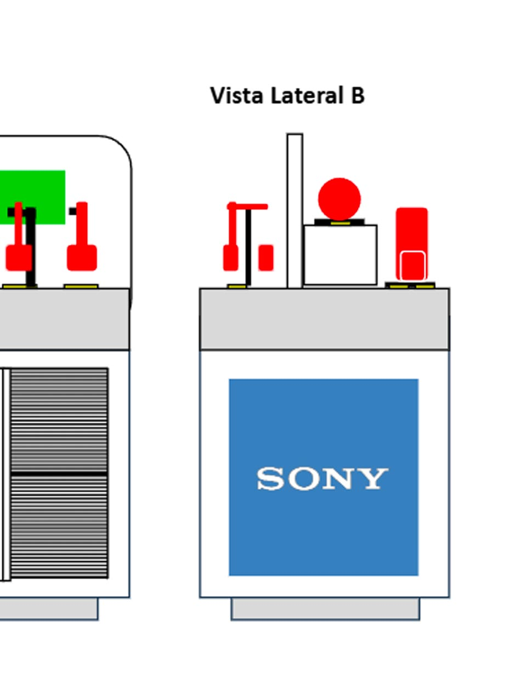
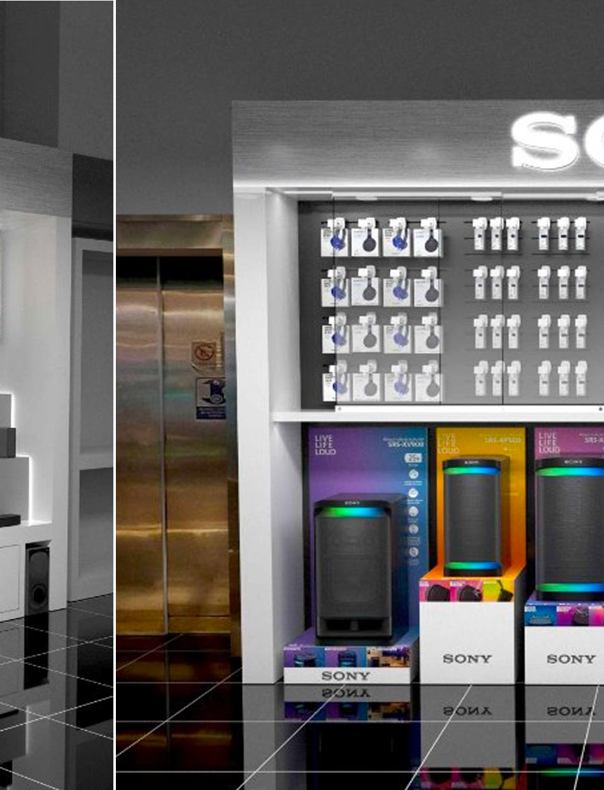
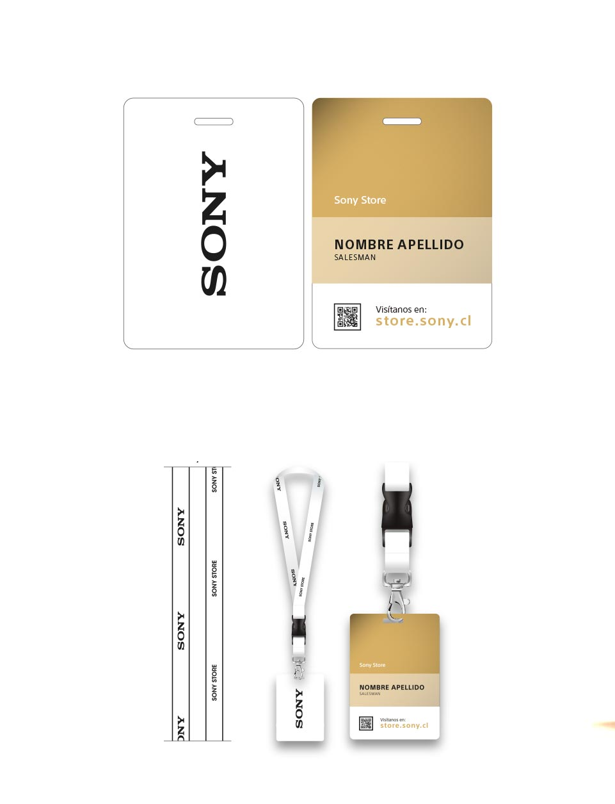

KENNEDY
Project Direction, Display
PARIS COSTANERA CENTER
Project Direction, Display
Multi-category Display Table Paris Costanera Center
- 

An interactive table display was created to showcase a selection of Sony speakers and headphones from different categories. The layout was designed to invite customer exploration, allowing them to test and compare products directly on the spot.
Paris Costanera Center, Chile 2024
SONY STORE COSTANERA CENTER
Project Direction, Display
COMPARISON
SONY STORE MARINA
Project Direction, Display
PARIS PARQUE ARAUCO
Project Direction, Display
Sony Corner Renewal Paris Parque Arauco

- 
The Sony corner at Paris Parque Arauco underwent a complete renovation to enhance the customer experience and align with the brand’s global image. The new design features a modern, open layout with updated furniture, improved lighting, and dedicated zones for audio and video.
Paris Parque Arauco, Chile 2023
PARIS PLAZA EL TREBOL
Project Direction, Display
COMPARISON
PARIS ALTO LAS CONDES
Project Direction, Display
AT PENJI
Art Direction, Illustration
PREMIUM IDENTITY PROGRAM
Art Direction, CI, Visual Strategy
Sony Store Premium Identity
- 

This visual display strategy is enhanced in order to highlight the benefits associated with Premium products and programs within Sony Stores. The goal was to differentiate these top-of-the-line products from the rest, and thereby generate immediate consumer recognition
Sony SRLA, Chile 2018
TOY DESIGN
Art Direction, Toy Design
HEADPHONES DISPLAY
Art Direction, Industrial Design
COUNTER ATTENTION
Art Direction, Industrial Design
LA CENTRAL
Art Direction, CI
LAUNCH CAMPAIGN
Art Direction
COVID-19 PREVENTION
Art Direction, CI, Illustration
CATALOG
Art Direction, Print, Editorial Design
SHOOPING GUIDE
Art Direction, Print, Editorial Design
PRODUCT BROCHOURE
Lettering
DISPLAY BACKDROOP
Art Direction, Visual Strategy
CAMPAIGN
Art Direction, Visual Strategy
BACKDROOP DESIGN
Art Direction, Visual Strategy
Sony for music lovers Backdroop Design

This graphic piece was carefully designed to complement the display at Sony points of sale where the competition has a strong presence in the audio category
Sony SRLA, Chile 2017
SKY
Art Direction, CI
STORE
Art Direction, CI, Illustration
Kiddos On Line store

Online clothing store for children and babies. All the graphic content for the administration and maintenance of the store was created. A graphic implementation manual was established for the external development of e-commerce
Kiddos.cl, Chile 2017
BRANDING
Art Direction, Lettering
Office Branding


Designed for Sony executive building, different motivational messages were drawn up that would contribute to harmony and motivation in the daily duty of those who work there
Sony Electronics Latin America, Chile / Bolivia 2016
MIKE
Art Direction, Lettering
ADVERTISING
Art Direction, Visual Strategy
BACKDROOP DISPLAY
Art Direction, Visual Strategy
CAMPAIGNS
Art Direction, Visual Strategy
Sony RRSS & On Line campaigns

Assets created for dissemination on different digital channels. Many of these were created for the Falabella, Ripley and Paris web portals
Falabella / Ripley / Paris, Chile 2016 - 2020
Illustration
Illustrations


Some personal projects of illustrations projects made by me that attend particular influences and graphic style at the time they were created
Personal Project, Venezuela - Spain 2008 - 2012